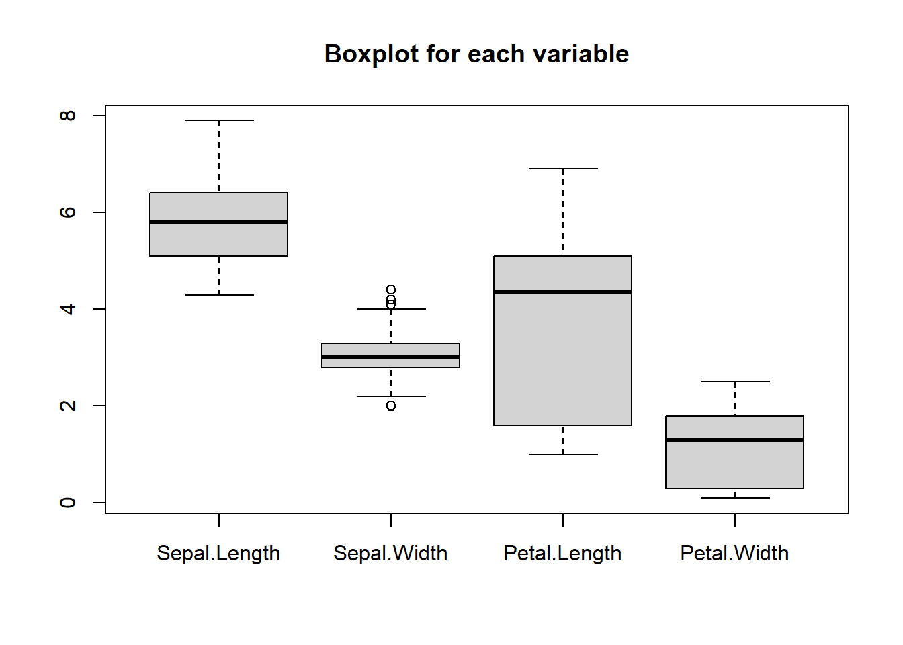
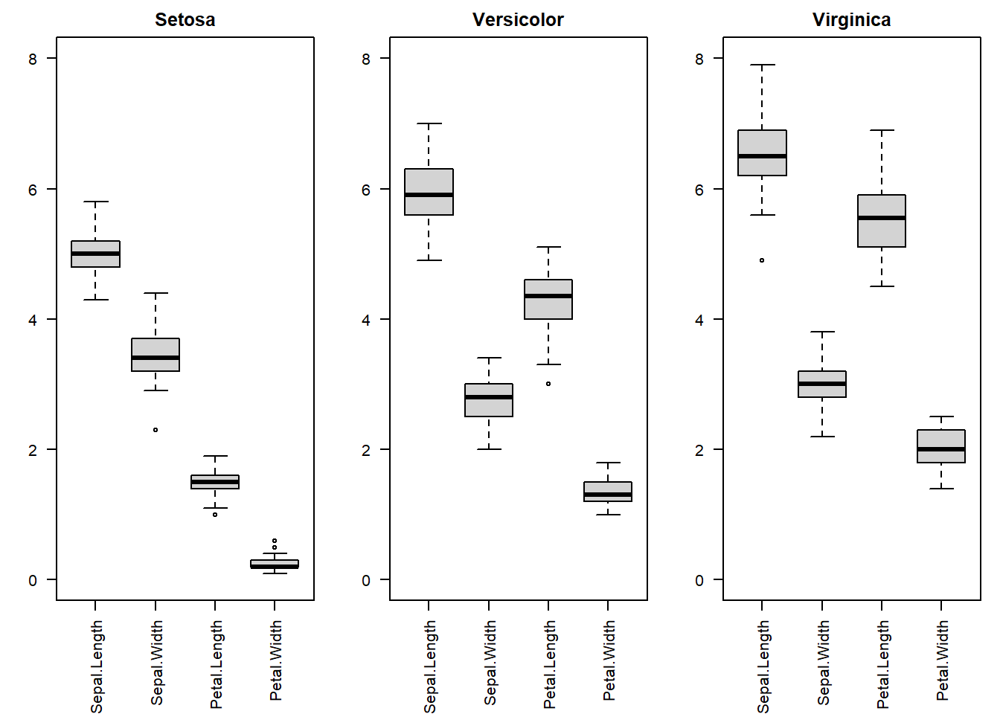
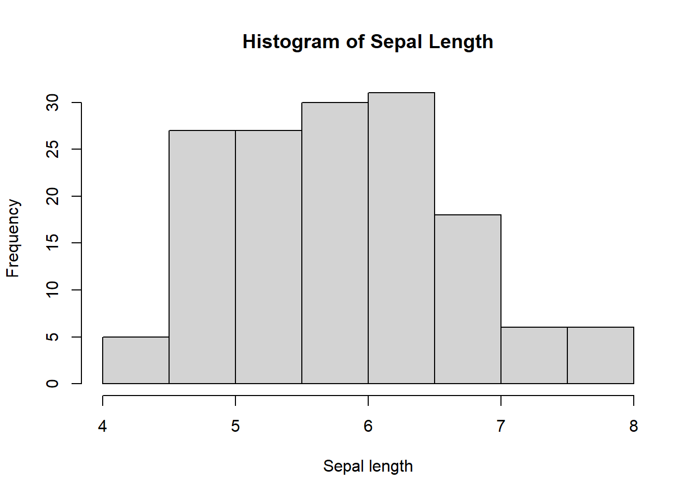
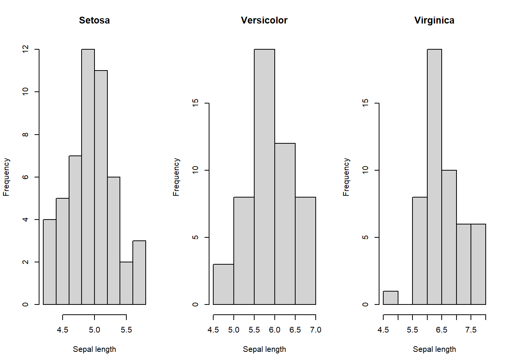
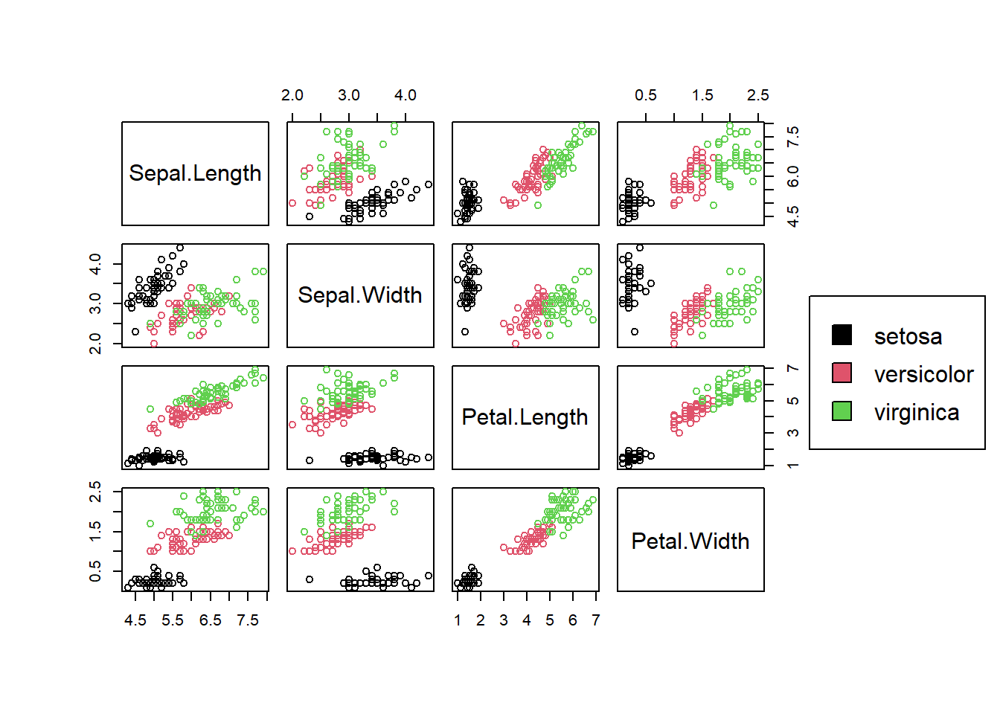

library(readr)Data exploration
Exploratory analysis on the iris data set
Data exploration is a big part of a Data Science project. It is the beginning of a project, where we try to understand our data and get an idea of the analysis we want to do to answer a specific question.
A real-life problem usually doesn’t come as in exercises “construct a linear model with \(y\) as the response and \(x_{1}\) and \(x_{2}\) as the covariates”. We need to apply the model we believe is the best both for our problem and the data we have.
This makes exploratory analysis an essential part of modelling. However, many people tend to not pay much attention on it. In this project we aim to showcase a complete data exploration and the fitting of a model based on it. We will work with the well known iris data set which is available in R.
Firstly, let’s import the libraries we will need.
We will now import the iris data set which is available in R.
data(iris)
head(iris, n=5) Sepal.Length Sepal.Width Petal.Length Petal.Width Species
1 5.1 3.5 1.4 0.2 setosa
2 4.9 3.0 1.4 0.2 setosa
3 4.7 3.2 1.3 0.2 setosa
4 4.6 3.1 1.5 0.2 setosa
5 5.0 3.6 1.4 0.2 setosaNote: Even though is the previous projects we have worked with tibbles, the iris data set is in a data frame. Tibbles are convenient to work with when you have large data and you use the readr::read_csv command. However, they are not suitable for mathematical operations, which is why we will use a data frame in our example where we want to fit a model.
Before we do any exploratory analysis we should be aware of the problem we are trying to solve. This is because there are countless exploratory analyses you can implement but this is not the point. We only need the information that is relevant to our question. This is even more important if we are working with large data sets, which is the case in many application.
The problem we will try to solve is whether we can predict sepal length of a flower from its sepal width and/or petal length and/or petal width. Also, does the suggested model change for the species of each flower?
Now we know the question we will try to answer, let’s get a summary of our data set.
summary(iris) Sepal.Length Sepal.Width Petal.Length Petal.Width
Min. :4.300 Min. :2.000 Min. :1.000 Min. :0.100
1st Qu.:5.100 1st Qu.:2.800 1st Qu.:1.600 1st Qu.:0.300
Median :5.800 Median :3.000 Median :4.350 Median :1.300
Mean :5.843 Mean :3.057 Mean :3.758 Mean :1.199
3rd Qu.:6.400 3rd Qu.:3.300 3rd Qu.:5.100 3rd Qu.:1.800
Max. :7.900 Max. :4.400 Max. :6.900 Max. :2.500
Species
setosa :50
versicolor:50
virginica :50
The above output tells us a lot. Firstly, it says that we have equal number of each species of flowers. This is really important because this implies that there is no bias towards any species.
It also shows some statistical values about the data. For example, for the means of the variables we have:
| Variable | Mean |
|---|---|
| Sepal Length | 5.843 |
| Sepal Width | 3.057 |
| Petal Length | 3.758 |
| Petal Width | 1.199 |
We see that the variables’ means are completely different and any comparison should take that into account. We will see the other elements of the summary in the below boxplot
boxplot(iris[,1:4], main="Boxplot for each variable")
We notice again, the difference in the sizes of each variable and also that we don’t have many outliers in the data, only some in sepal width.
Even tho we can get an idea about the range of the observations for each variable from the boxplot, we will also present the standard deviations of the variables.
print(sd(iris$Sepal.Length))
print(sd(iris$Sepal.Width))
print(sd(iris$Petal.Length))
print(sd(iris$Petal.Width))| Variable | Standard Deviation |
|---|---|
| Sepal Length | 0.8280661 |
| Sepal Width | 0.4358663 |
| Petal Length | 1.765298 |
| Petal Width | 0.7622377 |
Above we see that the range of the observations we get for each variable differ a lot.
Since we will compare the impact of each predictor between the different species (setosa, versicolor, virginica) it will be useful to see if there is a difference in the statistical measures of the variables for each species. We see this in the boxplots below.
par(mfrow=c(1,3),mar=c(6,3,2,1)) #to plot all boxplots in the same line
boxplot(iris[1:4][iris$Species=="setosa",], main="Setosa", ylim=c(0,8), las=2)
boxplot(iris[1:4][iris$Species=="versicolor",], main="Versicolor", ylim=c(0,8), las=2)
boxplot(iris[1:4][iris$Species=="virginica",], main="Virginica", ylim=c(0,8), las=2)
Above we see there are differences in all the statistical values for each variable per species and particularly in the medians and the ranges.
Since we want to predict the sepal length, let’s see how the sepal length is distributed with the following histogram.
hist(iris$Sepal.Length, main="Histogram of Sepal Length", xlab="Sepal length")
However, we saw above that the sepal length has differences based on the species of flowers we are studying. So we would like to see how those differences are reflected in the distribution of sepal length. For this reason we will produce the histograms for each species.
par(mfrow=c(1,3))
hist(iris$Sepal.Length[iris$Species=="setosa"], main="Setosa", xlab="Sepal length")
hist(iris$Sepal.Length[iris$Species=="versicolor"], main="Versicolor", xlab="Sepal length")
hist(iris$Sepal.Length[iris$Species=="virginica"],main="Virginica", xlab="Sepal length")
Indeed there are differences in the way sepal length is distributed for every species, for example there are more flowers with large sepal length in the versicolor species than in the setosa and virginica. So this is an indication that we will need three models, each for every species, or better a model with covariates the ones already discussed and additionally \(\mathbb{1}_{set}\) and \(\mathbb{1}_{ver}\) and for setosa and versicolor respectively, while when they are both \(0\) we have virginica.
A good measure of linear relationship between variables is the Pearson correlation. Let’s calculate the Pearson correlation of sepal length with sepal width, petal length and petal width.
print(cor(iris$Sepal.Length, iris$Sepal.Width))
print(cor(iris$Sepal.Length, iris$Petal.Length))
print(cor(iris$Sepal.Length, iris$Petal.Width))| Sepal Width | Petal Length | Petal Width | |
|---|---|---|---|
| Sepal Length | -0.1175698 | 0.8717538 | 0.8179411 |
We see above that sepal length has a high linear correlation with petal length and petal width, so the latter seem to be useful predictors for the former. The relationship in both cases is positive. However, when it comes to sepal width we see that it is not highly linearly correlated with sepal length. Many would be quick to say that this means that sepal width is not a good predictor. However, let’s see how the correlation changes with flower species.
print(cor(iris$Sepal.Length[iris$Species=="setosa"], iris$Sepal.Width[iris$Species=="setosa"]))
print(cor(iris$Sepal.Length[iris$Species=="versicolor"], iris$Sepal.Width[iris$Species=="versicolor"]))
print(cor(iris$Sepal.Length[iris$Species=="virginica"], iris$Sepal.Width[iris$Species=="virginica"]))| Sepal length/Sepal width | Setosa | Versicolor | Virginica |
|---|---|---|---|
| Sepal length | 0.7425467 | 0.5259107 | 0.4572278 |
In this case we see that for the setosa species the correlation between sepal length and sepal width is large. This means that sepal width can be an important predictor for sepal length and should be included in the model. Of course we are gonna confirm this later, but the exploratory analysis so far has given us an idea of the relationship between the variables.
To make this relation even easier to understand we will plot pairplots for the data. Also, we will colour each species differently to see how the relationship changes with the species in each case.
pairs(iris[,1:4],col=iris[,5],oma=c(6,6,6,12))
par(xpd=TRUE) #for the colouring
legend(0.85, 0.6,as.vector(unique(iris$Species)),fill=c(1,2,3))
In the above plot we see the relationships more clearly. All predictors seem to be significant to predict sepal length and they all have a linear relationship with it, some stronger (petal length and width) and some weaker (sepal width for versicolor and virginica). As we can see, the relationships for each species are different so we want to model it differently. This is why we have reached the full model: \[\begin{equation} Y=\alpha+\beta_{1}X_{1}+\beta_{2}X_{2}+\beta_{3}X_{3}+\gamma_{1}\mathbb{1}_{set}+\gamma_{2}\mathbb{1}_{ver}, \end{equation}\] where \(Y=\)Sepal Length, \(X_{1}=\)Sepal Width, \(X_{2}=\)Petal Length and \(X_{3}=\)Petal Width. Also \(\mathbb{1}_{set}=1\) for setosa and \(\mathbb{1}_{ver}=1\) for versicolor. When they are both \(0\) we have virginica.
To fit the model above we firstly need to add to our data frame the variables \(\mathbb{1}_{set}, \mathbb{1}_{ver}\) and \(\mathbb{1}_{vir}\) that become one only for setosa, versicolor and virginica respectively. We do this below.
#we create variables Setosa, Versicolor
iris$Setosa=rep(0, 150)
iris$Versicolor=rep(0, 150)
#we put 1 where variables become setosa and versicolor respectively
iris$Setosa[which(iris$Species=="setosa")]=1
iris$Versicolor[which(iris$Species=="versicolor")]=1
head(iris, n=5) Sepal.Length Sepal.Width Petal.Length Petal.Width Species Setosa Versicolor
1 5.1 3.5 1.4 0.2 setosa 1 0
2 4.9 3.0 1.4 0.2 setosa 1 0
3 4.7 3.2 1.3 0.2 setosa 1 0
4 4.6 3.1 1.5 0.2 setosa 1 0
5 5.0 3.6 1.4 0.2 setosa 1 0Now we have everything we need to build our model. We fit it below and get its summary.
model<-lm(Sepal.Length~Sepal.Width+Petal.Length+Petal.Width+Setosa+Versicolor, data=iris)
summary(model)
Call:
lm(formula = Sepal.Length ~ Sepal.Width + Petal.Length + Petal.Width +
Setosa + Versicolor, data = iris)
Residuals:
Min 1Q Median 3Q Max
-0.79424 -0.21874 0.00899 0.20255 0.73103
Coefficients:
Estimate Std. Error t value Pr(>|t|)
(Intercept) 1.14777 0.35356 3.246 0.00145 **
Sepal.Width 0.49589 0.08607 5.761 4.87e-08 ***
Petal.Length 0.82924 0.06853 12.101 < 2e-16 ***
Petal.Width -0.31516 0.15120 -2.084 0.03889 *
Setosa 1.02350 0.33373 3.067 0.00258 **
Versicolor 0.29994 0.11898 2.521 0.01280 *
---
Signif. codes: 0 '***' 0.001 '**' 0.01 '*' 0.05 '.' 0.1 ' ' 1
Residual standard error: 0.3068 on 144 degrees of freedom
Multiple R-squared: 0.8673, Adjusted R-squared: 0.8627
F-statistic: 188.3 on 5 and 144 DF, p-value: < 2.2e-16In the model above we see that all predictors have p-value less than \(0.05\) which indicates they are statistically significant as the exploratory analysis had implied. Also, the adjusted \(R^{2}\) is \(86.27\) which shows the model is a good fit for the data. The fitted model is \[\begin{equation} Y=1.418+0.496X_{1}+0.829X_{2}-0.315X_{3}+1.024\mathbb{1}_{set}+0.3\mathbb{1}_{ver}. \end{equation}\] With the model above we can predict the sepal length from the other variables and answer to any relevant questions about it.
Here our project ends. The main purpose of the project was to show how an exploratory analysis should be designed and implemented. Of course, there are a lot you can do to explore the data, but we tried to do only what is relevant to the question we had to ask. We then saw how this exploratory analysis helped us to design the appropriate model for our problem.
I hope you enjoyed the project and got an idea of what exploratory analysis should include. Good luck to your projects!